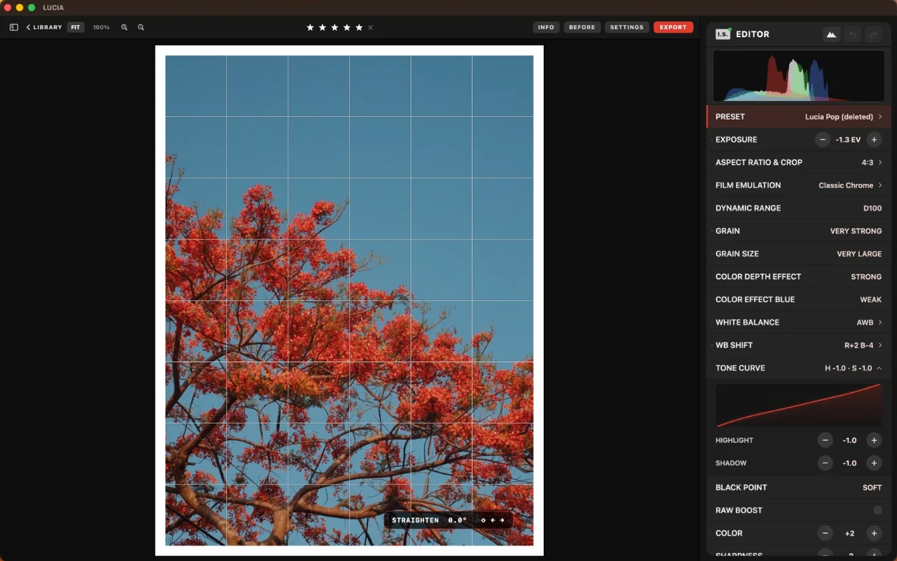

One negative.
Every screen.
Shoot on iPhone. Edit on the big one.



SYNCED
Photos on the big screen.
Shoot on the phone, then sit down and look at what you actually got. So many nice pictures. Same library, same looks, same edits, on your Mac and your iPad.
Never “Storage Full” again.
Tell Lucia how big its library on your phone may be: Small, Medium or Large. Lucia takes care of the rest. Nothing is deleted. It just goes home to your Mac.
Lucia Link.
The somewhat nifty part. Your devices talk to each other directly. The iPhone syncs seamlessly with Mac and iPad. One button, and everything is everywhere.